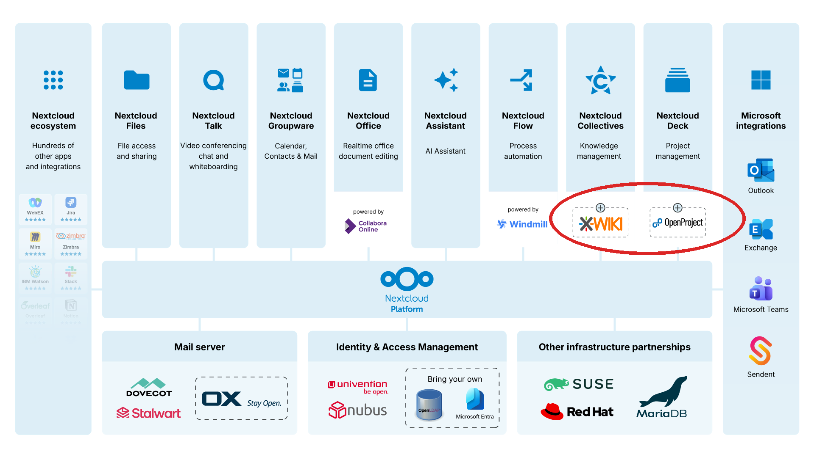

The Sovereign Exit from Jira
OpenProject and Nextcloud Hub
Wieland Lindenthal - Co-founder and CTO of OpenProject
OpenProject.org ·
@w.lindenthal:openproject.org ·
@wielinde@fosstodon.org
Nextcloud Community Conference 2026 · Berlin
Hello!
Atlassian announced end of "Data Center" for 2029

Sovereign Jira and Confluence alternative
... both are deeply integrated with Nextcloud Hub

Why sovereignty, why now
- Self-hosted Jira/Confluence customers are being pushed to Atlassian's cloud
- Renewed EU concerns about lock-in, pricing and the US Cloud Act
- Public sector and enterprises building sovereign digital workplaces around Nextcloud Hub
OpenProject is a Collaborative Project Management System
Example
Deep integration of Nextcloud and OpenProject
Nextcloud is mainly a file storage platform

Real challenges for an organisation
- Problem 1: "Where are the files for my task?"
- Problem 2: "Does everyone in my team have access?"
- Problem 3: "I want similar projects to easily follow the same structure"
Integration wins over feature duplication
- OpenProject has very basic file management, e.g. attachments
- Nextcloud has very basic task management, e.g. Deck
- Integration allows both to focus on their own core strengths
- No feature parity race, no lock-in between the two
In OpenProject: Show relevant files/folders for a work package

In OpenProject: Share access by saving files in the project folder

In Nextcloud: Link a file/folder to a work package

Seamless Cross Application User Integration
Supporting Standards: OAuth 2 Token Exchange and SCIM

Integrated we are stronger
Wieland Lindenthal - Co-founder and CTO of OpenProject
OpenProject.org ·
@w.lindenthal:openproject.org ·
@wielinde@fosstodon.org
Backup
Project templates improve quality and speed
- Provide template task lists
- with related template files
- in a template folder structure
Seamless Cross Application User Integration
XWiki Integration: The Jira and Confluence alternative

The wider ecosystem: vendors

A digital work place, organized by function